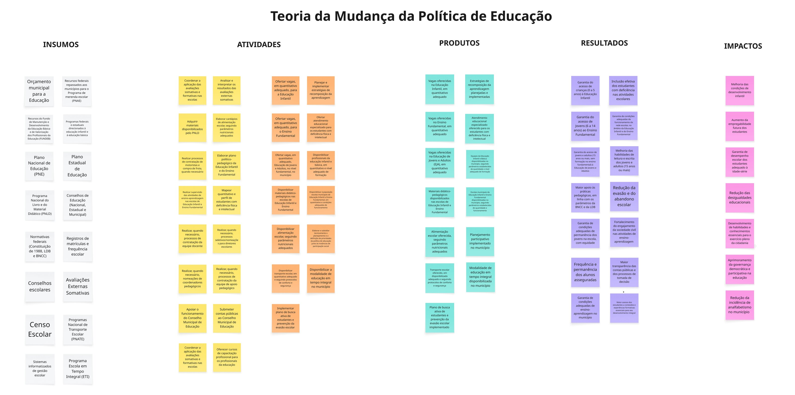

Como o município, dentro do arranjo do FUNDEB e do Plano Nacional de Educação, organiza vagas, materiais, transporte, alimentação e profissionais para produzir aprendizagem, reduzir evasão e ampliar equidade educacional.

A política educacional municipal brasileira tem responsabilidade direta sobre a educação infantil e o ensino fundamental — duas etapas decisivas para a trajetória educacional de toda uma geração. Opera dentro de uma arquitetura federativa estruturada por marcos como a Constituição, a LDB, a BNCC, o Plano Nacional de Educação e financiada principalmente pelo FUNDEB.
Esta teoria de mudança organiza os elementos da política educacional municipal a partir de uma cadeia causal: do orçamento e dos programas federais (PNLD, PNATE, ETI) à oferta efetiva de vagas, transporte, alimentação e materiais; daí às condições para a aprendizagem; e, por fim, aos impactos de longo prazo — melhoria do desempenho escolar, redução da evasão, ampliação da empregabilidade futura e redução das desigualdades educacionais.
O mapa explicita também a infraestrutura de governança democrática: conselhos escolares, Conselhos Municipais de Educação, prestação de contas, busca ativa de estudantes evadidos.
Para gestores: a educação tem cadeias causais longas — efeitos de qualidade só aparecem anos depois das mudanças. Use o mapa para acompanhar indicadores em cada etapa, sem esperar apenas pelo Ideb.
Para avaliadores: note que as colunas de produtos e resultados são especialmente densas em educação. Há muita coisa que precisa funcionar simultaneamente para que a aprendizagem aconteça. Boas avaliações educacionais identificam quais elementos da cadeia estão mais fortemente associados aos resultados de interesse.
Para órgãos de controle: o mapa permite identificar lacunas entre o que é financiado (insumos) e o que efetivamente chega à sala de aula (produtos), e entre o que chega e o que muda na vida dos estudantes (resultados).
{kind=link}